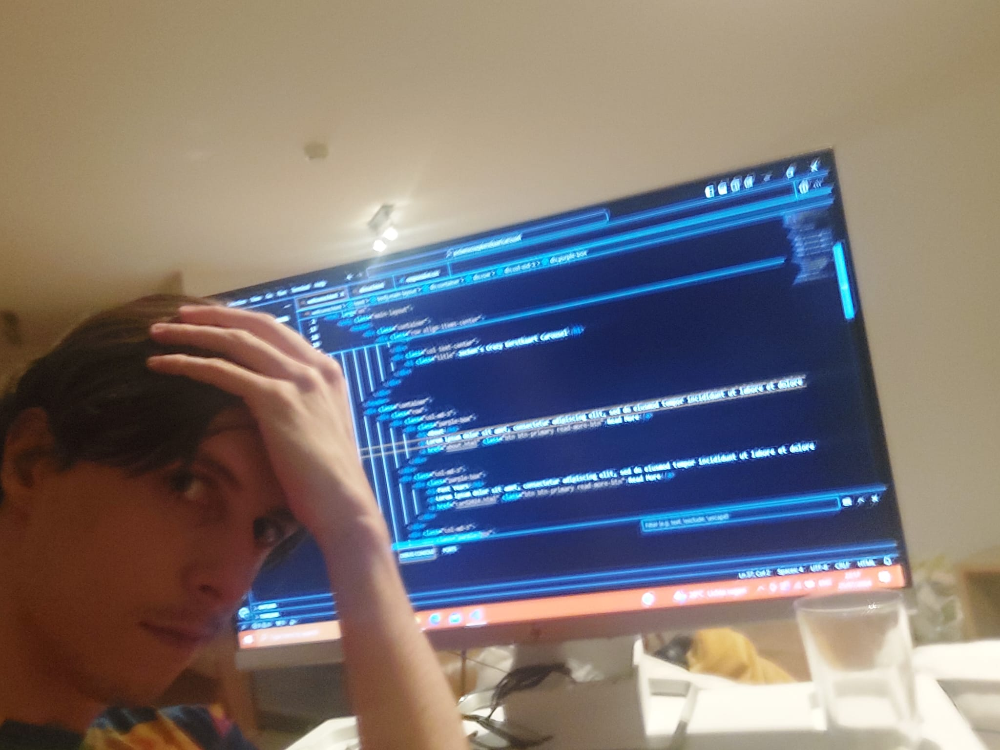
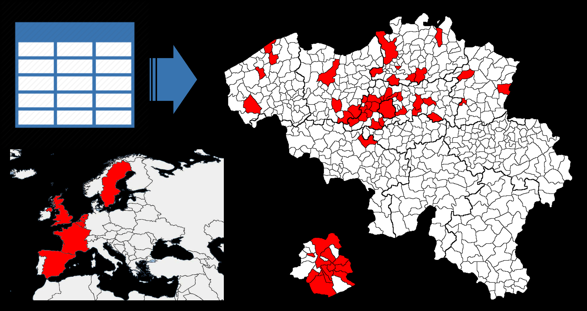

Van idee tot realiteit.
Zoals elk jaar begon ik rond juni al na te denken wat ik dit jaar ging doen om mijn kerstkaarten net dat
tikkeltje extra te geven. Het idee ontstond al snel om een website te koppelen aan de normale kaarten om
wat meer informatie te geven bij het hele concept. Een redelijke opgave gezien mijn gebrek aan kunde
in HTML, CSS of Javascript. Desalniettemin begon ik aan de uitdaging (met de hulp van chatGPT waar nodig) en
kwam uiteindelijk uit bij een min of meer werkzame webpagina. Toegegeven, het is niet echt geoptimalizeerd en
bevat nogal veel nodeloze bullshit, maar ik ben best tevreden. Vervolgens werden de files gehost op github pages
, gekoppeld aan de domeinnaam jochenscrazykerstkaartcarrousel.be en klaar is kees. Al bij al een proces dat toch
een paar weekends gekost heeft :(.

Kunst creëren, of zoiets
Eenmaal de website klaar was, kon ik beginnen aan het ontwerpen van de kerstkaart. Dat begint met het in kaart
brengen van alle elementen die erop moeten staan. Een deel daarvan kan ik gewoon bedenken, zoals dit jaar het neuraal
netwerk op de voorgrond, gezien de controverse over de fysica & chemie nobelprijs dit jaar, en voor een deel moet ik toch
eens gaan opzoeken wat nu juist de belangrijkste evenementen van het jaar waren die ik mogelijks gemist heb. Eenmaal de lijst
klaar is, kies ik een kleurenpatroon en bepaal ik wat er waar op de kaart gaat staan. Dit jaar moest er ook een
QR code bij. Een dynamische QR code is hiervoor aangewezen, aangezien die loelaat om nog wijzigingen aan te brengen
aan de link voor moest die het na drukken nog begeven. Vervolgens is het kwestie van alles
uit te tekenen (op computer of op papier, dan inscannen) en samen te gooien in GIMP (free photoshop) en er nadien
een gepaste filter over te gooien. Eenmaal tevreden kunnen de kaartjes online besteld worden (Drukzo).

Een moeilijke balans
Eenmaal de kaartjes besteld en onderweg zijn, is het tijd om de adressenlijst op te maken. Vertrekkende van de
excel adreslijst van vorig jaar. Aangezien ik weiger te aanvaarden dat mijn sociale kring kleiner wordt, voeg ik weer
wat mensen toe in de mate dat het budget het mij toelaat. Dat budget heeft ligt geleden onder het aanschaffen van
een website, maar minder dan je eigenlijk zou denken. Hierna contacteer ik de mensen waarvan ik niet zeker ben of
hun adres nog hetzelfde is. Eenmaal alle adressen bevestigd zijn, worden deze op stickers gedrukt en voor elk
adres druk ik ook een sticker met mijn retouradres. Die stickers maken de volgende stap een pak minder vermoeiend.
Schrijf schrijf schrijf schrijf ...
Wanneer alle benodigdheden toegekomen en afgewerkt zijn, is het meestal al midden november en begint de tijd
te dringen. Tijdens een vrij monotoon proces worden de etiketten op de enveloppen geplakt en een kaart eraan
toegevoegd. Voor het neerschrijven van het tekstje probeer ik mij wel even neer te zetten en mijn tijd te nemen.
Een klein tekeningetje wordt aan de tekst toegevoegd en de kaart verdwijnt in de enveloppe. Dichtplakken die handel
en op de stapel om te verzenden.
Klaar voor verzending!
Wel, de website is klaar en de kaarten zijn geschreven. Nu een rode brievenbus volstouwen met postkaarten en wachten...